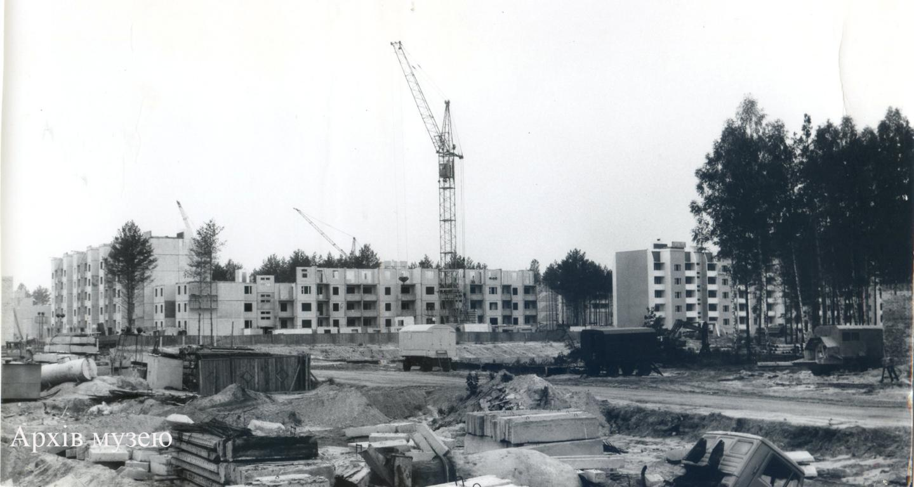
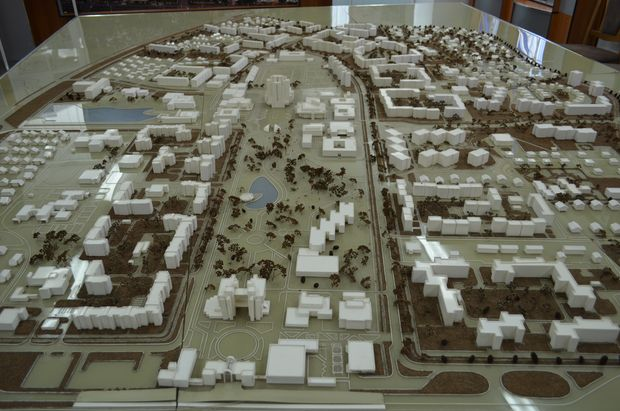

The city of Slavutych was conceived and built immediately after the 1986 Chernobyl Nuclear Power Plant accident.
Its primary purpose was to provide a new, safe place of residence for the power plant workers and their families who had been permanently evacuated from Pripyat.
A radiation-free site within a dense pine forest, located approximately 50 kilometers from the plant, was specifically chosen for its construction.

Building the first apartment blocks, late 1980s

The architectural model of the future city
Record Time And Different Republics
Slavutych is unique in that it was designed and built in an incredibly short time: construction began in late 1986, and the first residents started moving in as early as 1988.
Architects, engineers, and workers from eight different Soviet republics participated in this large-scale project.
Each republic built its own district, employing its own national architectural styles and designs, and sometimes even transporting its own construction materials from thousands of kilometers away.
Moving In and a New Start
The relocation process was a highly emotional experience for the people who had lost their former homes due to the disaster.
Families received the keys to brand-new, modern apartments and cottages in a city designed to the highest standards of the time.
Despite the tragic circumstances of its founding, Slavutych quickly became a city with an incredibly high birth rate and a vast number of children, symbolizing hope and rebirth.